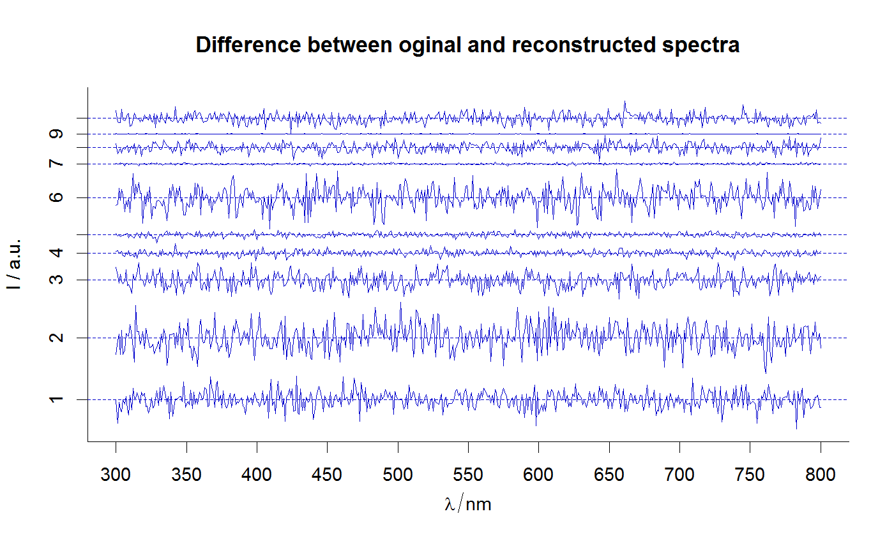

Plot difference between original (e.g., experimental) and
reconstructed spectra. Function reconstructSp is used
to reconstruct spectra, that are subtracted from original spectra afrterwards.
plot_spDiff(loadings, scores, sp, Title = "Difference between oginal and reconstructed spectra", color = if (".color" %in% names(sp$..)) sp$.color else "blue3", stacked = if ("ID" %in% names(sp$..)) sp$ID else NULL, spc.nmax = 2000, ...)
| loadings | Components' spectra (loadings) as a |
|---|---|
| scores | Components' amplitudes (scores) as either a matrix or a
|
| sp |
|
| Title | The main title for the plot. |
| color | see |
| stacked | if not |
| spc.nmax | maximal number of spectra to be plotted (to avoid accidentally plotting of large numbers of spectra). |
| ... | Other parameters to be passed to function
|
A plot of calculated difference between expected (original) and reconstructed spectra. (Drawn with R package graphics).
Function plotspc is used to make a plot. R base
plotting system annotations can be used to enhance the plot.
Other spHelper plots: check_palette,
layer_spRangeMean,
plot_colors, plot_hyPalette,
plot_spCompare,
plot_spDistribution,
qplot_confusion,
qplot_crosstab,
qplot_infoDim, qplot_kAmp,
qplot_kSp, qplot_prediction,
qplot_spRangeCenter,
qplot_spStat, qplot_spc,
rmExpr, rm_stripes,
stat_chull
Other component analysis / factorisation related functions in spHelper: getScores,
infoDim, qplot_infoDim,
qplot_kAmp, qplot_kSp,
qplot_spc, reconstructSp,
sortLoadings, unipeak,
whichOutlier
plot_spDiff(Loadings2, Scores2[1:10,,], Spectra2[1:10,,], stacked = TRUE)